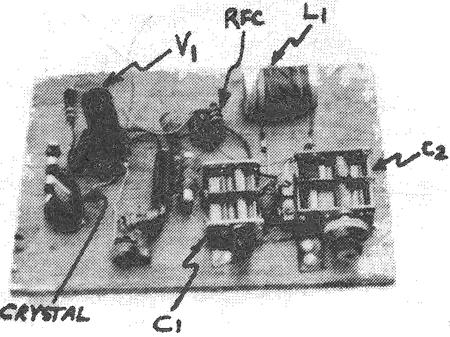
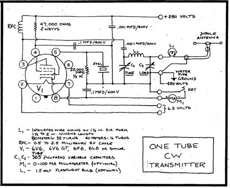

George Brand (WA8SC0/0) and several other MOTHER-reading hams have suggested that 1 tell folks just how simple and inexpensive it can be to get a "no frills" amateur rig on the air. These folks are afraid that all this talk about slow scan TV, 5-band SSB transmitters, and radio teletype "is going to scare a lot of people away. Presented like that, ham radio looms up larger than life and the average person is going to think he can't handle it.".
George and the others have a mighty good point. In the early days of amateur radio, everything was simple because it had to be. Then the fallout from the growing electronics industry enabled hams to do things they couldn't do before: use voice instead of Morse code, send pictures and written material, and even put their own repeater satellites into space. It's true that some of those advances have a lot of potential as tools for that better world we're trying to build but they're not necessary for "just plain fun" communication. In fact, much can be done with the very simplest of radio gear. A 5-watt CW (code) transmitter on 40 or 80 meters can reach out reliably a few hundred miles, and extra good conditions can stretch that range to two or three thousand miles.
Yes, CW is still alive and well. The conversion of words into the dits and dahs of Morse code gets the message through with simpler, less expensive gear than any other mode of transmission. And you still can cover more distance per watt of transmitter power with CW than with any other mode.
Code transmission is slow, and many who've never tried it suppose that it must be very mechanical and impersonal. Not at all! Just as those of us who were raised on the old radio shows found them as satisfying as TV, so folks who get into CW enjoy it as much as communication by phone. The scope for imagination may be the key to this mode's appeal coupled with the excitement of seeing words appear letter by letter from the point of your pencil as you copy an incoming message!
The Novice license allows CW operation on three "long distance" bands - 80, 40, and 15 meters-and isn't difficult to obtain (the code test is given at only 5 words per minute and the written exam is very simple. See MOTHER NO. 25 for details of the licensing procedure.) Although the Novice level has so far been a two: year, non-renewable stepping stone to a higher class license, the FCC is now thinking about making it permanent and renewable.
What it comes to is this: If you're mainly looking for a way to contact the outside world from your homestead in an emergency, a Novice ticket and an El Cheapo rig might make a lot of sense. The same applies if you'd just like to get the feel of ham radio with a minimum investment of time and money. Interested? Then let's take a gander at one really low-cost source of basic equipment.
Andy Schaefer (WN3WKA, RD 1, Box 117, Honesdale, Pa. 18431) built the simple one-tube transmitter shown in the photo. In fact, he's put together three of the gadgets without spending 30 a cent on any of them. The secret? Parts scrounged from old tube-type radios, tape recorders, audio amps, and TV sets.
Andy's little rig runs about five watts input, more or less, depending on the power supply B+ voltage and the particular type of tube you end up using. Tubes of the types I've mentioned all have the same base pin connections but other types (although their pin connections may differ) can be used too. The output tubes in audio amplifiers and the horizontal sweep amplifier tubes in TV sets are likely prospects.
The accompanying schematic circuit diagram shows the workings of Andy's transmitter and if the drawing makes absolutely no sense to you, then it's time to run down to your local library for a basic book on radio. Since even the Novice exam refers to a "schematic" or two, you might as well start getting familiar with them!.
The schematic is a symbolic notation of the parts used in a piece of electronic equipment, the values of those components, and how they're connected. It tells nothing about their relative physical locations. In contrast, a "pictorial" diagram locks you into a particular parts-mounting scheme. Example: Andy's first two transmitters were built on wooden boards, and the third on a metal chassis. The same schematic applies to all models, but each would require a different pictorial because the layouts and appearance of the physical parts differ.
If you're planning to build a transmitter like the one shown in the diagram, you'll want a power supply which will put out 6.3 volts AC for the tube filament or heater, and +250 or +300 volts DC for the rest of the circuit. Most pre-World War II console radios, most audio amps and tape recorders from the 1950's, and some 50's TV sets will have just what you need. You can leave the power supply on its original chassis, or remount it elsewhere. (It's also possible in many cases to "steal" the above voltages from the power supply built into your shortwave receiver.)
The frequency of Andy's little transmitter is controlled by a quartz crystal which plugs into the second "octal" socket. A separate crystal is required for each operating frequency:
This crystal, incidentally, is one part you won't find in old radios or TVs. Possible sources: Some radio clubs have Novice crystal banks which loan such devices to members, and many hams have a few left over from their earlier days. If you don't succeed in locating a freebie, you can obtain one or more at modest cost from JAN Crystals, 2400 Crystal Drive, Ft. Myers, Fla. 33901. State the frequency you want, and specify that the crystal should be in an FT243 holder. Since 3733 and 7133 kHz have been publicized as the Novice band New Directions gathering frequencies, these would be good ones to order. Make sure any others you purchase are at least a few kHz inside the band.
Crystals for the 40-meter Novice band cost $1.50 each for any frequency plus or minus one kilohertz, and $2.00 each for exact frequencies. Those for 80 meters are priced at $3.00. There's an additional charge for postage: 15d per unit by regular mail, or 25d airmail.
A dipole antenna such as the one described in MOTHER NO. 29 is simple to make, and satisfactory for use with Andy's rig. The transmitter can be tuned using a milliammeter in series with the key:
[1] Fully mesh the plates of the LOAD capacitor.
[2] Adjust TUNE capacitor for minimum current.
[3] Unmesh LOAD somewhat, and readjust TUNE for minimum
[4] Repeat Step 3 until the current at the minimum or. "dip" is about 80 or 90 percent of the maximum.
An alternative to the milliammeter is some sort of RF current indicator (such as a 1.5 volt flashlight bulb) in series with the antenna feed line. In this case, adjust TUNE and LOAD for maximum bulb brightness. The output signal should also be checked with a receiver located some distance from the rig to make sure the transmission is "clean". A slight readjustment of TUNE and LOAD may be necessary to get good stable keying with some individual crystals and tube types, although Andy reports that no part of the system seems very critical.
A final caution concerns the high voltage present in such a device, particularly if you choose to build your transmitter "breadboard" fashion as in the photo: You can get a shock if you put your hands in the wrong place! Be careful, and make sure there's no chance of young kids activating the whole shebang when you're not around!
Other hams are probably your best bet for old equipment and parts. The breed seems to have a strong pack rat instinct, and it's a rare radio freak who doesn't have a well-filled "junk box". Don't be shy about asking! .Helping beginners get started is a ham radio tradition.
Almost every sizable town has a ham club. Check with the local Chamber of Commerce to find yours, and go to a meeting or two. Many such groups have free code and theory classes for beginners and anyhow, you're almost sure to meet at least one compatible soul.
Many old-timers in radio are familiar with the details of converting war surplus junk into usable equipment. The same folks generally know what stuff is worth tinkering with, and who near you may have some useful items squirreled away.
There are still a few companies in the mail-order surplus business. Fair Radio Sales, P.O. Box 1105, Lima, Ohio 45802 is probably the best. This firm has a wide range of complete units and parts-a good percentage of which date back to World War I I -plus conversion manuals and schematics for many of the more popular ham rigs. Send the company 25e if you'd like one of its catalogs.
Peace,
Cop Macdonald (WOORX/VE1)
2612 Windsor St.
Halifax, Nova Scotia, Canada
|
 |
 |
|